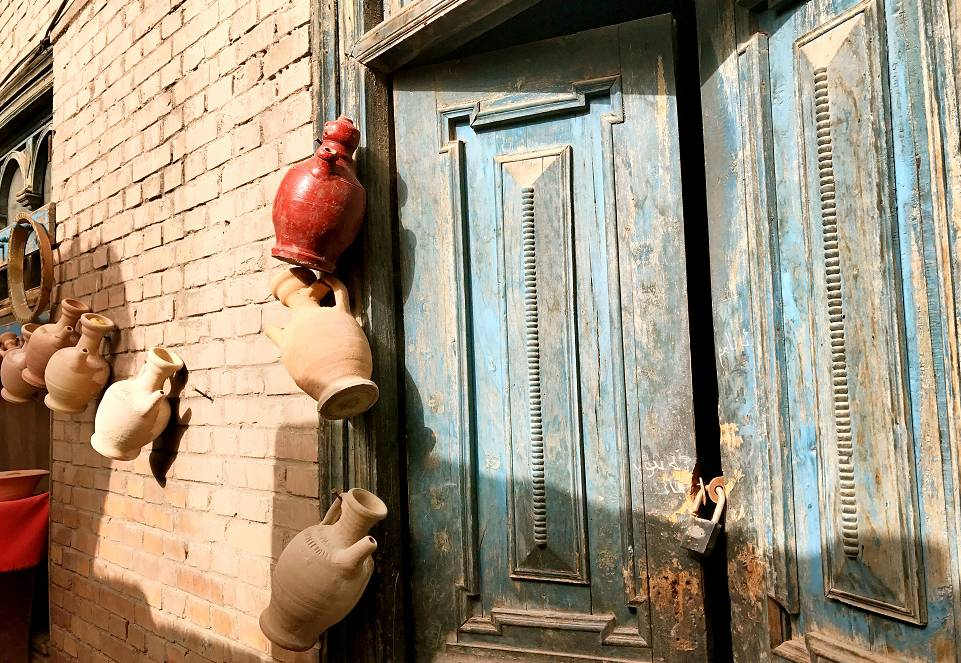

我去过内地很多城市，我觉得很多内地城市用一句话还可以形容。
但喀什是一个多元文化的地方，文化和宗教的十字路口，无法用一句话概括！
如果实在要说，那我想说的一句话就是：一言难尽……
行走在新疆喀什，有种穿越时空的错觉。
一边是高楼林立的新城，一边是古老的生土建筑群 。
就像我心脏是一座有两间卧室的房子：
一间住着悲伤，另一间住着欢乐。
喀什这座城市天生就适合我的灵魂！
在新疆有这么一句话“没来过喀什，不算到过新疆”。
乍一听到，觉得太夸张，但如果你来过，就肯定会认同。
这里不像网上传言的那样很乱，不安全。
从乌鲁木齐飞往喀什的航班，邻座小伙子神情紧张，嘀咕着会不会遇上暴动什么的，但在喀什老城的阳光里，那份担心早已烟消云散，比阳光还明媚的笑脸，会驱散你心里最后一丝不安。
这个城市真的是个很爱笑又很有礼貌的城市，街道上彼此擦间而过的陌生人们，只要招招手说声“哈啰”，都会收获一份善意的回报。
去过那么多地方，这是唯一一处小孩子们看到有人拍照不是躲开不是上来要钱，还会开心的摆好姿势。
与乌鲁木齐相比，喀什才是我理想中对西域的印象，到处都是维吾尔族同胞，浓浓的异域风情，特色鲜明的当地风俗，虔诚的宗教信仰，无不在触碰着你每一根神经，每一个灵魂。在喀什老城区，这里的维族比例可以高达99%，除了游客几乎看不到汉族面孔，深黄色的夯土还原了新疆大地的颜色，是真正触碰到喀什葛尔灵魂的地方，是喀什远古精髓的载体。
走进喀什老城，会让你有种时光倒流回中世纪的感觉，怀旧的彩色，在老城里纯粹到只剩下了土黄。
在喀什的街道里，你看到的都是带着方帽的男子和包着头巾的妇女，他们身穿着民族特色是服饰，互相讲着一口流利的维语， 让你仿佛置身于异国他乡。
这是一座安逸幸福的城，木质雕花大门多为虚掩，孩童们安心的在家门口嬉戏玩乐，老人们三俩结伴坐在长椅上娓娓细语，妇女们手抱幼童脸上洋溢着恬淡的笑容。
老城区的建筑大部分多为二至三层的高度，外墙以大地色为主，倒并不显得枯燥乏味，几乎家家都有露台和庭院。爬满了墙头的藤蔓，露台上姹紫嫣红的盆栽，绿意中透露着浓浓的生活气息。
街巷纵横交错，布局灵活多变，曲径通幽，街道两旁各种商铺琳琅满目，应接不暇，还保留了许多手工艺家庭作坊，有秀花帽的，烧土陶的，做乐器的。
吾斯塘博依路，是喀什老城的一个缩影，但凡来喀什老城旅游的人，都会到这里看看。
帽子巴扎、首饰巴扎、百年老茶馆、大大小小的古董店、乐器店、打馕铺、烤包子店……，吾斯塘博依几乎浓缩了喀什老城所有的巴扎（巴扎：集市）。
位于吾斯塘博依路与库木代尔瓦扎路交汇处，一栋绿色的维吾尔族风格的两层楼建筑，是喀什老城仅存的唯一一家百年老茶馆。它不仅是喀什老城人喝茶打发时光的最佳去处，也是寻找老城记忆的不二选择。
茶馆里几乎坐满了人，好不欢快，你若幸运的话，还能听到当地维吾尔族爷爷演奏乐声，姑娘们立刻闻乐起舞，一派悠然的景象。
一壶茶，一友人，一支曲，再好不过。
老城东北端，是著名的高台民居，这里的维吾尔族人世代聚居，房屋依崖而建，家族人口增多一代，便在祖辈的房上加盖一层楼，这样一代一代，房连房，楼连楼，层层叠叠。
在这些随意建造的楼上楼、楼外楼之间，形成了四通八达、纵横交错、曲曲弯弯的小巷，小巷里的居民热情好客 ，展示着维吾尔古代民居建筑和民俗风情。
在喀什老城，几乎所有的街道都通往一个地方，那就是有五百年历史的艾提尕尔清真寺，是全疆乃至全国最大的一座伊斯兰教礼拜寺。
喀什的美，美在神圣庄严的宗教圣地——艾提尕尔清真寺。周五主麻日来做礼拜的人可达六七千人，而古尔邦节时更是人肩相摩，场面盛大。
我不信教，只信善，我相信真正的信仰都是让人向善的，来这里，也可以听听阿訇念诵的古兰经，体悟穆斯林那虔诚的跪拜，感受宗教信仰的力量，似乎心灵也瞬间得到了纯化。在许多年以后你去过的很多地方你都可能忘记，艾提尕尔清真寺你一定会时常想起。香妃墓原名阿帕克霍加麻扎，坐落在喀什市东北郊 5km 处的浩罕村，因传说乾隆皇帝的香妃埋葬于此，于是香妃墓的名字被渐渐传开，取代原名。
周围很幽静，鲜花环绕，旁边还有一处喀什最古老的墓群在陪伴着她。人会死去，但留下的故事可以传颂千年。
人家说喀什晚上像浦东，白天像中东。
喀什麦田旅社， 有着俯瞰全城的美好角度。旅舍开在喀什人民路东湖老区，一条安静的巷子里，闹中取静。太阳落山时，在麦田房间的窗口就可以看见水光潋滟的东湖和夕阳下格外灿烂的高台民居！
喀什的夜色比我想象中的现代，远处的东湖犹如暗夜里闪着蓝光的镜子，湖面上赫然倒影着城市里的光束万千。
在喀什著名的夜市里，定是美食飘香人声鼎沸，位于艾提尕尔对面的夜市，许多年来一直备受吃货们力捧，被视为喀什品尝街头美食的首选之地。当漫长的白日终于被黑夜取代，喀什人的生活才刚刚开始，令人心生向往的喀什夜市。
十月正是西瓜、哈密瓜、无花果、葡萄集中上市的时节，也是羊肉最为肥美的时候、烤鸡蛋、蛋卷、缸子肉、解渴的甜杏干、撸串... ...喀什的夜市好吃不贵，满足味蕾的同时也不会花费很多，有没有很幸福。
从城市里来，到风沙里去
我们沉默不语啊
唯有以飞扬的喀什噶尔尘土相赠
小的时候，有一次骑自行车掉进一个很深的水塘中，有过挣扎，想抓住什么，可什么都没有……只能任凭命运的捉弄，活着真是一件看运气的事，有些人和物能留到你可以遇见也是一件注定好的事，遗憾的是我从来没有为什么东西拼命努力过！
很多非常想要的东西
你一定要为此赌上一切啊
不然可能就永远错过了
来人间一趟
要来喀什的老街上走走
这一座活着的千年古城
不知道是否还有下一个千年